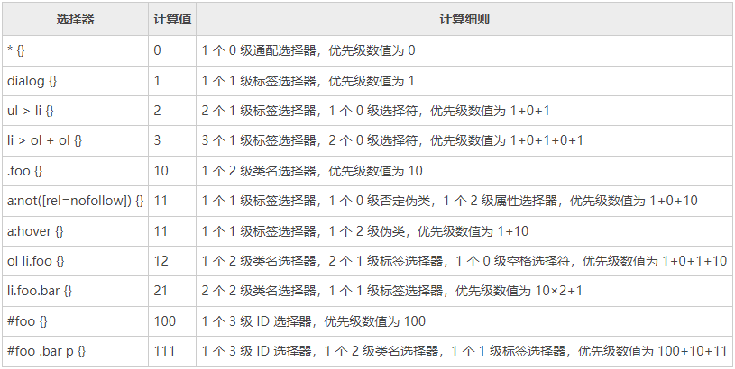

选择器优先级（由低往高排）
-
0 级
通配选择器、选择符和逻辑组合伪类。
通配选择器写作星号 *。示例如下：
* { font-size: 14px }选择符指 +、>、~、空格和 ||。
逻辑组合伪类有 :not()、:is() 和 :where() 等，这些伪类本身并不影响 CSS 优先级，影响优先级的是括号里面的选择器。例如：
*:not(.big-size) { font-size: 1.2rem } -
1级
标签选择器。示例如下：
p { line-height: 1.25 } -
2级
类选择器、属性选择器和伪类。示例如下：
.foo { color: #666; }[checked] { color: blue; }:hover { cursor: pointer; } -
3级
id选择器。示例如下：
#app { color: #333; } -
4级
标签内联样式。示例如下：
<div style="color: blue" /> -
5级
!important 是顶级优先级，可以重置 JavaScript 设置的样式，唯一推荐使用的场景就是使 JavaScript 设置无效。例如：
.foo[style*="color: #ccc"] { color: #fff !important; }对于其他场景，没有任何使用它的理由，切勿滥用。
CSS 选择器优先级的计算规则
对于 CSS 选择器优先级的计算，业界流传甚广的是数值计数法。每一段 CSS 语句的选择器都可以对应一个具体的数值，数值越大优先级越高，其中的 CSS 语句将被优先渲染。具体规则为：
- 出现一个 0 级选择器，优先级数值+0；
- 出现一个 1 级选择器，优先级数值+1；
- 出现一个 2 级选择器，优先级数值+10；
- 出现一个 3 级选择器，优先级数值+100。

做个小测试
body 元素的颜色是红色还是蓝色？
HTML:
<html lang="zh-CN">
<body class="foo">颜色是？</body>
</html>
CSS:
body.foo:not([dir]) { color: red; }
html[lang] > .foo { color: blue; }
我们先来计算一下各自的优先级数值。
首先是 body.foo:not([dir])，出现了 1 个标签选择器 body，1 个类名选择器.foo和 1 个否定伪类:not，以及属性选择器[dir]，计算结果是 1+10+0+10，也就是 21。
接下来是 html[lang] > body.foo，出现了 1 个标签选择器 html，1 个属性选择器[lang]和 1 个类名选择器.foo，计算结果是 1+10+10，也就是 21。
这两个选择器的计算值居然是一样的，那该怎么渲染呢？
这就引出了另外一个重要的规则——“后来居上”。也就是说，当 CSS 选择器的优先级数值一样的时候，后渲染的选择器的优先级更高。因此，上题的最终颜色是蓝色（blue）。
还有一个误区有必要强调一下，那就是 CSS 选择器的优先级与 DOM 元素的层级位置没有任何关系。例如：
body .foo { color: red; }
html .foo { color: blue; }
请问.foo的颜色是红色还是蓝色？
答案是蓝色。虽然 body 是 html 的子元素，离.foo的距离更近，但是选择器的优先级并不考虑 DOM 的位置，所以后面的 html.foo{} 的优先级更高。
增加 CSS 选择器优先级的小技巧
实际开发时，难免会遇到需要增加 CSS 选择器优先级的场景。例如，希望增加下面.foo类名选择器的权重：
.foo { color: #333; }
很多人的做法是增加嵌套，例如：
.father .foo {}
或者是增加一个标签选择器，例如：
div.foo {}
但这些都不是最好的方法，因为这些方法增加了耦合，降低了可维护性，一旦哪天父元素类名变化了，或者标签换了，样式岂不是就失效了？
这里给大家介绍一个增加 CSS 选择器优先级的小技巧，那就是重复选择器自身。例如，可以像下面这样做，既提高了优先级，又不会增加耦合，实在是上上之选：
.foo.foo {}
如果你实在不喜欢这种写法，借助必然会存在的属性选择器也是不错的方法。例如：
.foo[class] {}
#foo[id] {}
对数值计数法的点评
上面提到的 CSS 选择器优先级数值的计数法实际上是一个不严谨的方法，因为 1 和 10 之间的差距实在太小了，这也就意味着连续 10 个标签选择器的优先级就和 1 个类名选择器齐平了。
然而事实并非如此，不同等级的选择器之间的差距是无法跨越的存在。但由于在实际开发中，我们是不会连续写上多达 10 个选择器的，因此不会影响我们在实际开发过程中计算选择器优先级。
而且对于使用 CSS 选择器而言，你的书写习惯远比知识更重要，就算你理论知识再扎实，如果平时书写习惯糟糕，也无法避免 CSS 样式覆盖问题、样式冲突等问题的出现。因此，对于数值计算法，我的态度是，学一遍即可，没有必要反复攻读，做到面面俱到，只要你习惯足够好，是不会遇到乱七八糟的优先级问题的。
在 CSS 选择器这里，等级真的是无法跨越的鸿沟吗？其实不是，这里有大家不知道的冷知识。
256 个选择器的越级现象
有如下 HTML：
<span id="foo" class="f">颜色是？</span>
有如下 CSS：
#foo { color: #000; background: #eee; }
.f { color: #fff; background: #333; }
很显然，文字的颜色是 #000，即黑色，因为 ID 选择器的级别比类名选择器的级别高一级。但是，如果是下面的 CSS呢？256个.f类名合体：
#foo { padding: 10px 20px; color: #000; background: #eee; }
.f.f.f.f.f.f.f.f.f.f.f.f.f.f.f.f.f.f.f.f.f.f.f.f.f.f.f.f.f.f.f.f.f.f.f.f.f.f.f.f.f.f.f.f.f.f.f.f.f.f.f.f.f.f.f.f.f.f.f.f.f.f.f.f.f.f.f.f.f.f.f.f.f.f.f.f.f.f.f.f.f.f.f.f.f.f.f.f.f.f.f.f.f.f.f.f.f.f.f.f.f.f.f.f.f.f.f.f.f.f.f.f.f.f.f.f.f.f.f.f.f.f.f.f.f.f.f.f.f.f.f.f.f.f.f.f.f.f.f.f.f.f.f.f.f.f.f.f.f.f.f.f.f.f.f.f.f.f.f.f.f.f.f.f.f.f.f.f.f.f.f.f.f.f.f.f.f.f.f.f.f.f.f.f.f.f.f.f.f.f.f.f.f.f.f.f.f.f.f.f.f.f.f.f.f.f.f.f.f.f.f.f.f.f.f.f.f.f.f.f.f.f.f.f.f.f.f.f.f.f.f.f.f.f.f.f.f.f.f.f.f.f.f.f.f.f.f.f.f.f.f.f.f.f.f.f.f {
color: #fff; background: #333;
}
在 IE 浏览器下，神奇的事情发生了，文字的颜色表现为白色，背景色表现为深色。
实际上，在过去，Chrome 浏览器、Firefox 浏览器下都出现过这种 256 个选择器的优先级大于上一个选择器级别的现象，后来，大约 2015 年之后，Chrome 浏览器和 Firefox 浏览器都修改了策略，使得再多的选择器的优先级也无法超过上一级，因此，目前越级现象仅在 IE 浏览器中可见。
为什么会有这种有趣的现象呢？早些年查看 Firefox 浏览器的源代码，发现所有的类名都是以 8 字节字符串存储的，8 字节所能容纳的最大值就是 255，因此同时出现 256 个类名的时候, 势必会越过其边缘，溢出到 ID 区域。而现在采用了 16 字节的字符串存储，能容纳的类型数量足够多了，就不会出现这种现象。
当然，这个冷知识并没有多大的实用价值，大致了解一下即可。